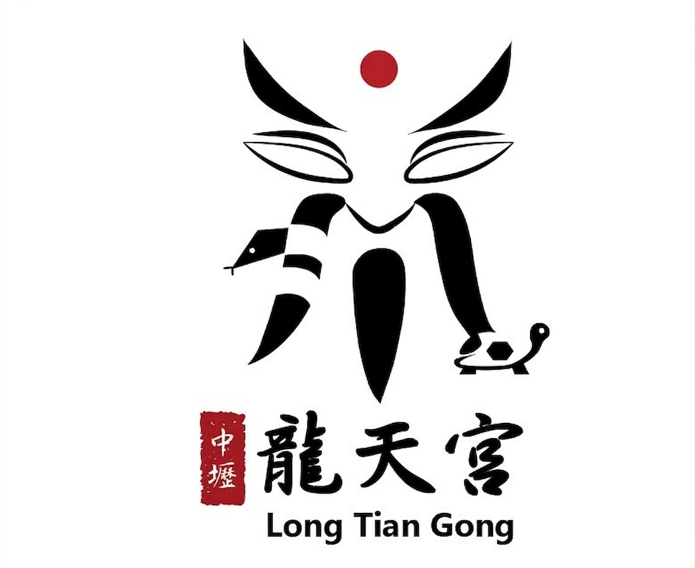

主要導覽
沿格
加入龍天宮
油燈介紹
管委會名單
值年爐主／副爐主
開基神明
宮內業務（庫存系統）🔒
參加活動連結 👉
祭改
光明燈太歲年斗
全家補運補財庫
個人補運補財庫
普度
進香
宮內活動公告
丙午年十二正月祭改，祭改日：農曆十二月七日(116年國曆1/24)星期日
友宮拜訪公告
福仁慈惠堂，拜訪日：農曆十一月初四日(國曆12/3)星期日
中壢龍天宮丁未年民國116年法會及進香相關活動（版本：2026.10.19.2）
中壢龍天宮位於桃園市中壢區，為當地重要的宗教信仰中心。每年舉辦多場法會及相關活動，吸引眾多信徒參與。
法會活動
丙午年十二正月祭改
祭改日：農曆十二月七日(116年國曆1/24)星期日
正月光明燈太歲平安年斗
開燈開斗日：農曆正月初九日(國曆2/14)星期日
三月玄天上帝聖誕補運及補財庫
補運補財庫日：農曆三月初三日(國曆4/9)星期五
六月關聖帝君聖誕補運及補財庫
補運補財庫日：農曆六月十五日(國曆7/18)星期日
七月中元普度大會
普度日：農曆七月廿八日(國曆8/29)星期日
九月法主聖君聖誕補運及補財庫
補運補財庫日：農曆九月初四日(國曆10/3)星期日
進香活動
二月南巡進香日
南巡進香日：農曆二月初六初七兩日(國曆3/13 & 3/14)星期六日
九月北巡進香日
北巡進香日：農曆九月初一日(國曆10/1)星期一
友宮拜訪
福仁慈惠堂
拜訪日：農曆十一月初四日(國曆12/3)星期日